Kiemelt szerzők művei
| Joanne Kathleen Rowling | |||
|---|---|---|---|
| 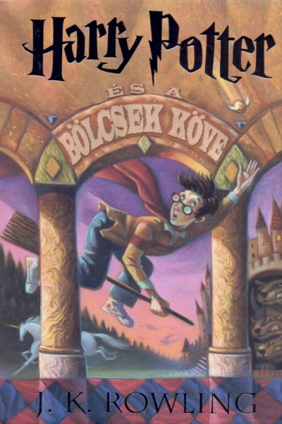 Harry Potter and the Philosopher’s Stone 2500Ft |
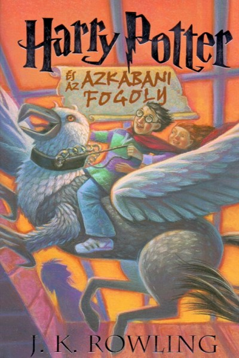 Harry Potter and the Prisoner of Azkaban 1500Ft | 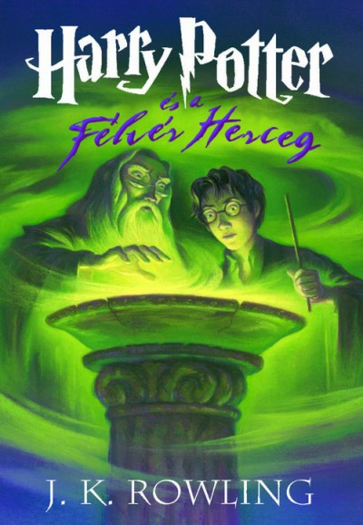 Harry Potter and the Half-Blood Prince 1500Ft |
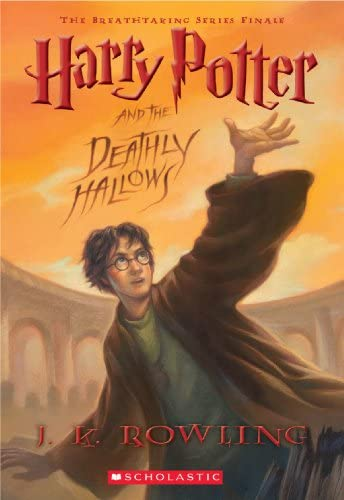 Harry Potter and the Deathly Hallows 2500Ft |
| John Ronald Reuel Tolkien |
|---|
| 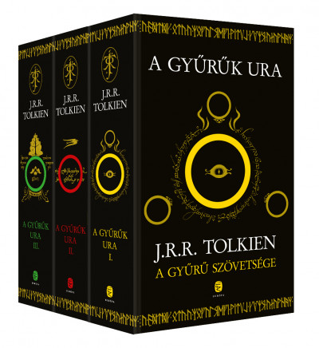 A Gyűrű szövetsége, A két torony,A király visszatér 11250Ft |
| Andrzej Sapkowski | ||||
|---|---|---|---|---|
 A Vaják Az utolsó kivánság A Vaják Az utolsó kivánság 2500Ft |
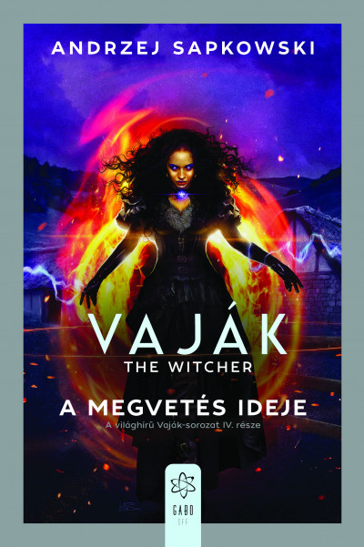 A Vaják A megvetés ideje 3800Ft |
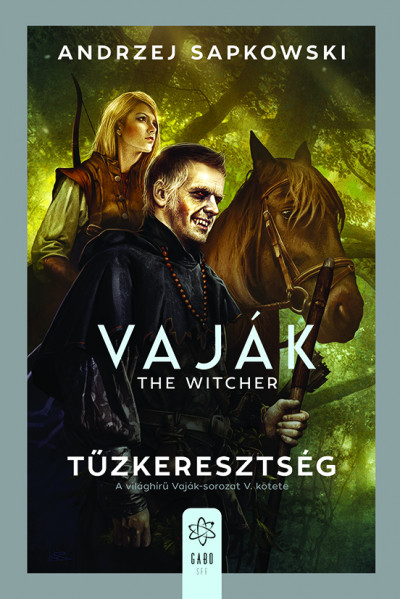 A Vaják A Tűzkeresztség 2000Ft |
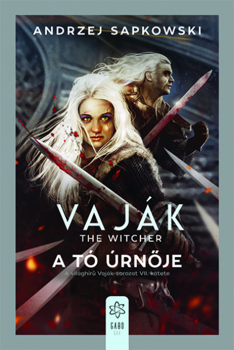 A Vaják A tó úrnője 3600Ft |
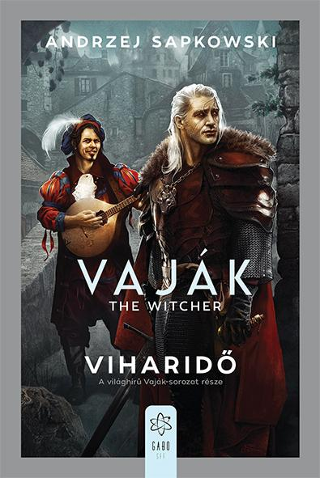 A Vaják Viharidő 4000Ft |
| Pókember képregények | ||
|---|---|---|
| 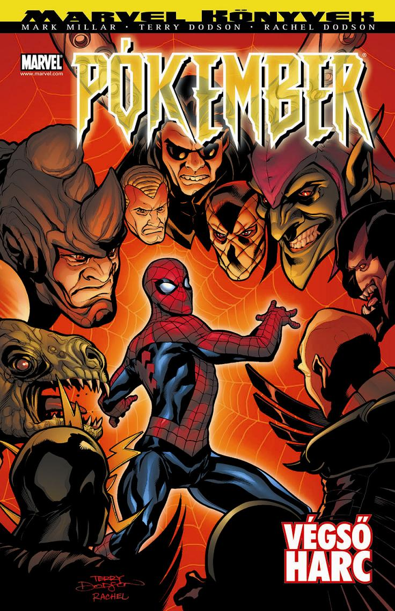 Pókember Végsőharc képregény 1125Ft |
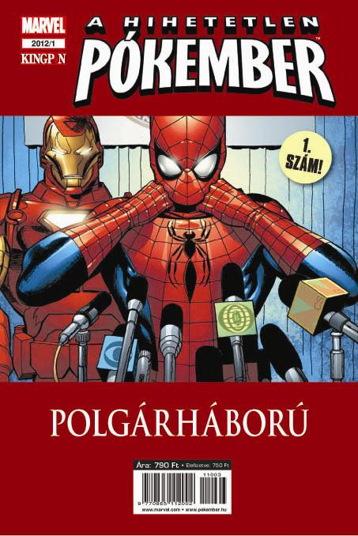Pókember Polgárháború 900Ft |
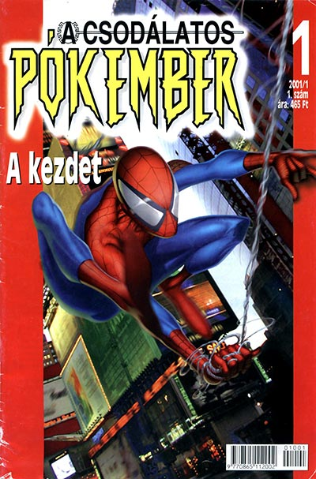Pókember A kezdet 1125Ft |